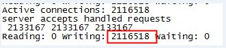
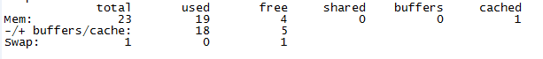

对于一个server，我们一般考虑他所能支撑的qps，但有那么一种应用， 我们需要关注的是它能支撑的连接数个数，而并非qps，当然qps也是我们需要考虑的性能点之一。这种应用常见于消息推送系统，也称为comet应用，比如聊天室或即时消息推送系统等。comet应用具体可见我之前的介绍，在此不多讲。对于这类系统，因为很多消息需要到产生时才推送给客户端，所以当没有消息产生时，就需要hold住客户端的连接，这样，当有大量的客户端时，就需要hold住大量的连接，这种连接我们称为长连接。
首先，我们分析一下，对于这类服务，需消耗的系统资源有：cpu、网络、内存。所以，想让系统性能达到最佳，我们先找到系统的瓶颈所在。这样的长连接，往往我们是没有数据发送的，所以也可以看作为非活动连接。对于系统来说，这种非活动连接，并不占用cpu与网络资源，而仅仅占用系统的内存而已。所以，我们假想，只要系统内存足够，系统就能够支持我们想达到的连接数，那么事实是否真的如此？如果真能这样，内核来维护这相当大的数据结构，也是一种考验。
要完成测试，我们需要有一个服务端，还有大量的客户端。所以需要服务端程序与客户端程序。为达到目标，我的想法是这样的：客户端产生一个连接，向服务端发起一个请求，服务端hold住该连接，而不返回数据。
1. 服务端的准备
对于服务端，由于之前的假想，我们需要一台大内存的服务器，用于部署nginx的comet应用。下面是我用的服务端的情况：
Summary: Dell R710, 2 x Xeon E5520 2.27GHz, 23.5GB / 24GB 1333MHz
System: Dell PowerEdge R710 (Dell 0VWN1R)
Processors: 2 x Xeon E5520 2.27GHz 5860MHz FSB (16 cores)
Memory: 23.5GB / 24GB 1333MHz == 6 x 4GB, 12 x empty
Disk-Control: megaraid_sas0: Dell/LSILogic PERC 6/i, Package 6.2.0-0013, FW 1.22.02-0612,
Network: eth0 (bnx2):Broadcom NetXtreme II BCM5709 Gigabit Ethernet,1000Mb/s
OS: RHEL Server 5.4 (Tikanga), Linux 2.6.18-164.el5 x86_64, 64-bit
服务端程序很简单，基于nginx写的一个comet模块，该模块接受用户的请求，然后保持用户的连接，而不返回。Nginx的status模块，可直接用于监控最大连接数。
服务端还需要调整一下系统的参数，在/etc/sysctl.conf中：
net.core.somaxconn = 2048
net.core.rmem_default = 262144
net.core.wmem_default = 262144
net.core.rmem_max = 16777216
net.core.wmem_max = 16777216
net.ipv4.tcp_rmem = 4096 4096 16777216
net.ipv4.tcp_wmem = 4096 4096 16777216
net.ipv4.tcp_mem = 786432 2097152 3145728
net.ipv4.tcp_max_syn_backlog = 16384
net.core.netdev_max_backlog = 20000
net.ipv4.tcp_fin_timeout = 15
net.ipv4.tcp_max_syn_backlog = 16384
net.ipv4.tcp_tw_reuse = 1
net.ipv4.tcp_tw_recycle = 1
net.ipv4.tcp_max_orphans = 131072
/sbin/sysctl -p 生效
这里，我们主要看这几项：
net.ipv4.tcp_rmem 用来配置读缓冲的大小，三个值，第一个是这个读缓冲的最小值，第三个是最大值，中间的是默认值。我们可以在程序中修改读缓冲的大小，但是不能超过最小与最大。为了使每个socket所使用的内存数最小，我这里设置默认值为4096。
net.ipv4.tcp_wmem 用来配置写缓冲的大小。
读缓冲与写缓冲在大小，直接影响到socket在内核中内存的占用。
而net.ipv4.tcp_mem则是配置tcp的内存大小，其单位是页，而不是字节。当超过第二个值时，TCP进入pressure模式，此时TCP尝试稳定其内存的使用，当小于第一个值时，就退出pressure模式。当内存占用超过第三个值时，TCP就拒绝分配socket了，查看dmesg，会打出很多的日志“TCP: too many of orphaned sockets”。
另外net.ipv4.tcp_max_orphans这个值也要设置一下，这个值表示系统所能处理不属于任何进程的socket数量，当我们需要快速建立大量连接时，就需要关注下这个值了。当不属于任何进程的socket的数量大于这个值时，dmesg就会看到”too many of orphaned sockets”。
另外，服务端需要打开大量的文件描述符，比如200万个，但我们设置最大文件描述符限制时，会遇到一些问题，我们在后面详细讲解。
2. 客户端的准备
由于我们需要构建大量的客户端，而我们知道，在一台系统上，连接到一个服务时的本地端口是有限的。由于端口是16位整数，也就只能是0到65535，而0到1023是预留端口，所以能分配的只是1024到65534，也就是64511个。也就是说，一台机器只能创建六万多个长连接。要达到我们的两百万连接，需要大概34台客户端。
当然，我们可以采用虚拟ip的方式来实现这么多客户端，如果是虚拟ip，则每个ip可以绑定六万多个端口，34个虚拟ip就可以搞定。而我这里呢，正好申请到了公司的资源，所以就采用实体机来做了。
由于系统默认参数，自动分配的端口数有限，是从32768到61000，所以我们需要更改客户端/etc/sysctl.conf的参数：
net.ipv4.ip_local_port_range = 1024 65535
/sbin/sysctl -p
客户端程序是基于libevent写的一个测试程序，不断的建立新的连接请求。
3. 由于客户端与服务端需要建立大量的socket，所以我们需要调速一下最大文件描述符。
客户端，需要创建六万多个socket，我设置最大为十万好了，的在/etc/security/limits.conf中添加：
admin soft nofile 100000
admin hard nofile 100000
服务端，需要创建200万连接，那我想设置nofile为200万，好，问题来了。
当我设置nofile为200万时，系统直接无法登陆了。尝试几次，发现最大只能设置到100万。在查过源码后，才知道，原来在2.6.25内核之前有个宏定义，定义了这个值的最大值，为1024*1024，正好是100万，而在2.6.25内核及其之后，这个值是可以通过/proc/sys/fs/nr_open来设置。于是我升级内核到2.6.32。ulimit详细介绍见博文：老生常谈: ulimit问题及其影响。
升级内核后，继续我们的调优，如下：
sudo bash -c 'echo 2000000 > /proc/sys/fs/nr_open'
现在再设置nofile就可以了:
admin soft nofile 2000000
admin hard nofile 2000000
4. 最后，在测试的过程中，根据dmesg的系统打出的信息不断调整服务端/sbin/sysctl中的配置，最后我们的测试完成了200万的长连接。
为了使内存占用尽量减少，我将Nginx的request_pool_size从默认的4k改成1k了。另外，net.ipv4.tcp_wmem与net.ipv4.tcp_rmem中的默认值也设置成4k。
两百万连接时，通过nginx的监控得到数据：

两百万连接时系统内存情况：
